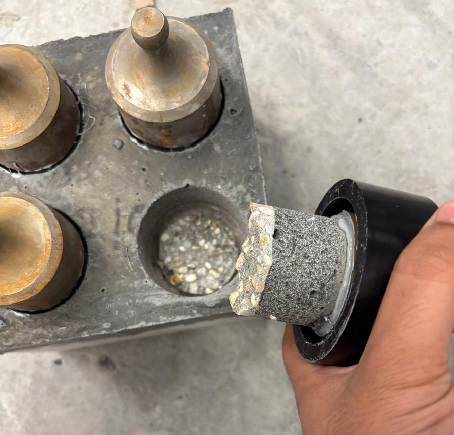
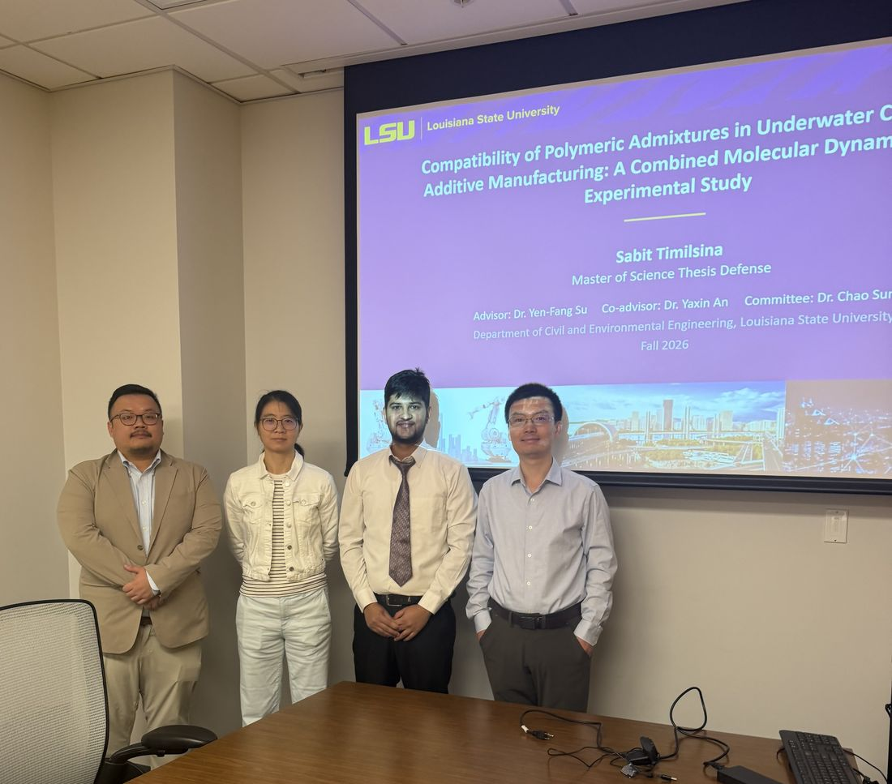
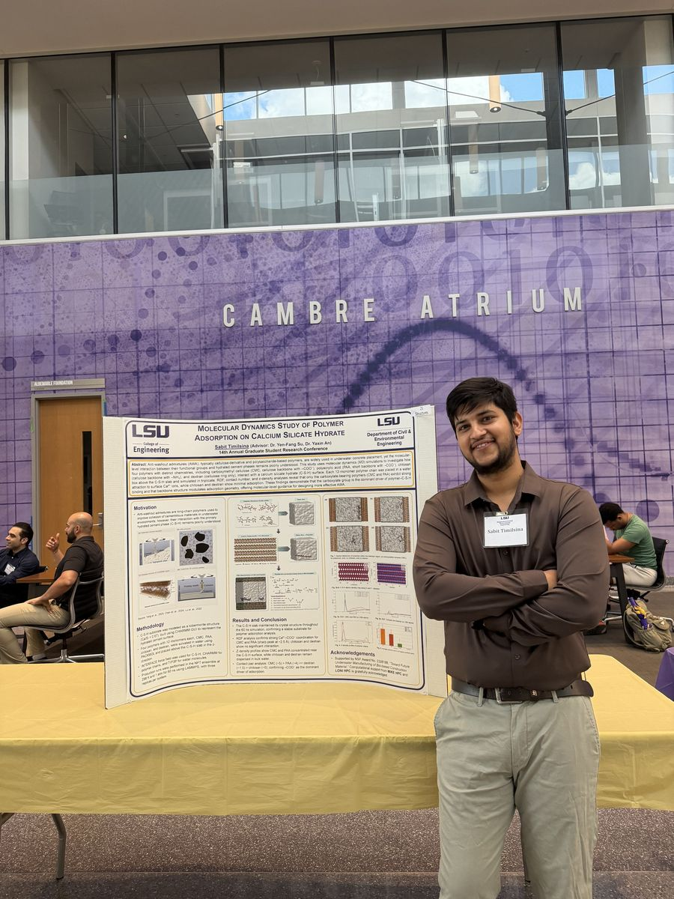

Research
I'm a graduate research assistant in Dr. Yen-Fang Su's group at LSU, and my work is on concrete materials. In the lab I work with UHPC, including self-sensing mixes, and with mortars made for underwater 3D printing. I've worked on two funded projects, described below.
I also work with Dr. Yaxin An in Chemical Engineering on molecular dynamics simulations. I run them in LAMMPS on the LSU and LONI computing clusters to study how anti-washout admixtures and superplasticizers adsorb on C-S-H, the main binding phase in cement paste.
Research projects
UHPC for bridge link slabs
Many bridges now use jointless decks, where a link slab joins the ends of two adjacent spans. A field study on the Ouachita River bridge found transverse cracks in these link slabs, because the slab is in tension over the gap between spans. This project looks at using UHPC for the link slab instead. UHPC is very strong, keeps carrying tension after it cracks because of its fibers, and lets very little water in. The first step is a UHPC mix suitable for Louisiana bridges.
With my labmate Masoud Pasbani, I worked on the UHPC mix design and on testing the trial mixes to check that they met the project's design criteria. We mixed and cast the batches and ran compressive, tensile, bond and splitting tests on them.



Underwater 3D concrete printing
This NSF project is about building under water with 3D printing. My M.S. thesis is part of it. In the lab I helped test mortars made for underwater printing for washout resistance, rheology, setting time and strength, and that testing work is in our 2026 SEM conference paper. On the simulation side, I studied how anti-washout admixtures and superplasticizers attach to C-S-H.
M.S. thesis
Compatibility of Polymeric Admixtures in Underwater Concrete Additive Manufacturing: A Combined Molecular Dynamics and Experimental Study
Concrete placed under water, for bridge piers, underwater repairs or underwater 3D printing, usually needs two admixtures. A superplasticizer (PCE) keeps the mix fluid enough to pump or extrude, and an anti-washout admixture (AWA) keeps the cement paste from washing away. The two can work against each other, and when they do, the mix washes out or loses its shape. My thesis looked at this problem from the molecular scale up to mortar.
For the simulations, I modeled four polymers on a C-S-H surface in water: CMC, PAA, chitosan and dextran. I ran each one alone and together with a PCE molecule in LAMMPS, and looked at how the chains attach to the surface, how they bond with water and how PCE changes that. In the lab, I made mortars with the same kinds of polymers, with and without PCE, and tested yield stress, flow, washout, fresh-state permeability, setting time and strength.
The simulations showed that CMC and PAA hold on to the C-S-H surface through their carboxylate groups binding surface calcium, while chitosan and dextran don't stay attached. CMC held on more strongly than PAA because of how its carboxylate groups sit on the chain, and both mostly kept their hold when PCE was present. In the mortar tests, CMC gave the lowest permeability of the three model polymers without PCE. With PCE, CMC and PAA raised the yield stress and permeability more than chitosan did. So when choosing an AWA to use with a PCE, both the polymer's chemistry and its chain architecture matter.
The thesis was part of the NSF project above, and the simulations used computing time on LSU's HPC clusters and LONI.


Publications
- Pasbani, M., Timilsina, S., Su, Y.-F., Okeil, A., An, Y., and Jeong, H. (2026). Characterization framework for underwater printable concrete: modified testing methods with environmental simulation. 2026 SEM Annual Conference and Exposition on Experimental and Applied Mechanics, Norfolk, VA, June 2026. Conference program
- Wang, T., Nag, S., Patel, R., Timilsina, S., Bharti, B., Su, Y.-F., and An, Y. (2025). Salt-responsive behaviors of PVBTACl, NaPSS, and their complex by molecular dynamics simulations and experiments. Soft Matter, 21(37), 7333–7343. doi.org/10.1039/D5SM00282F
In preparation
- Timilsina, S., An, Y., and Su, Y.-F. Molecular dynamics simulation of polymer–mineral interactions: a review.
- Timilsina, S., An, Y., and Su, Y.-F. Molecular dynamics study of polymer adsorption on calcium silicate hydrate.
Posters
- Toward the molecular design of anti-washout admixtures for underwater concrete: a molecular dynamics study. ACI Concrete Convention, Atlanta, GA, October 2026.
- Molecular dynamics study of polymer adsorption on calcium silicate hydrate. 14th Annual LSU Graduate Student Research Conference, 2026.



Service
Organizing committee, APTEC Gulf Coast Polymer Conference (May 2026 to present). More on the Leadership page.
Related course project: Sulfate ion transport in C-S-H nanopores.